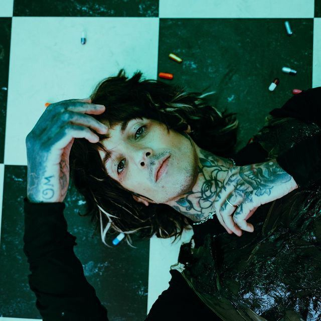
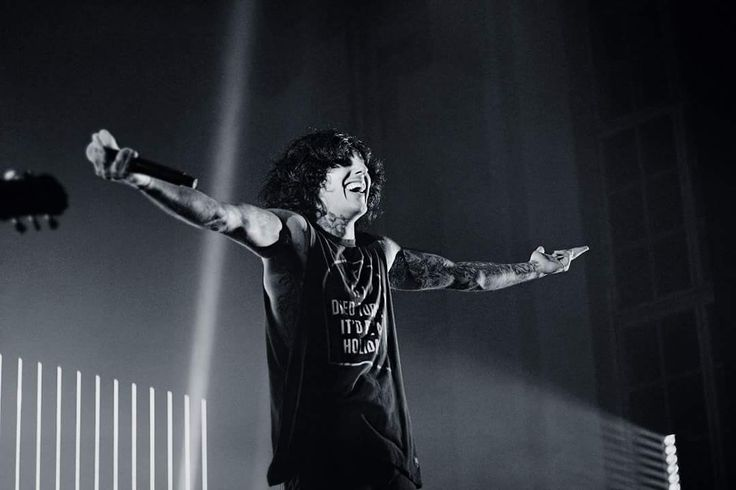
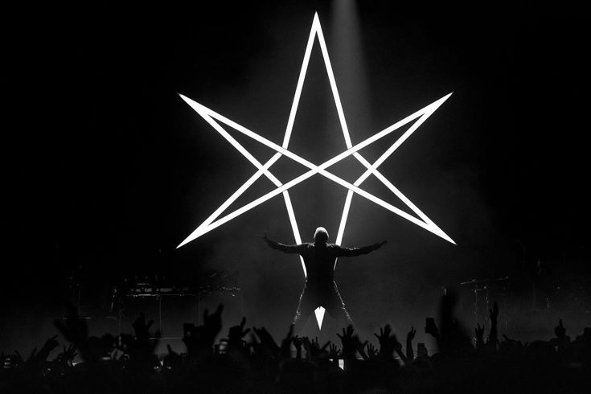
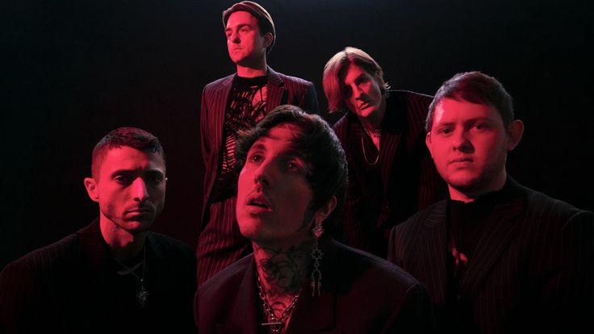

Oliver Sykes

Nama: Oliver Scott Sykes
Lahir: 20 November 1986 (umur 36) Ashford,Yorkshire Selatan, Inggris
Pekerjaan: Musisi,penyanyi,pencipta,lagu,pengusaha,desainer,pakaian

Oliver Scott "Oli" Sykes (lahir 20 November 1986) adalah musisi, pencipta lagu, pengusaha, dan desainer pakaian yang berasal dari Inggris,
Britania Raya.
Ia dikenal sebagai vokalis grup musik Metal Bring Me the Horizon serta merupakan pendiri perusahaan pakaian Drop Dead
Clothing.Ia juga menciptakan novel grafis berjudul Raised by Raptors bersama seniman Drop Dead Clothing Ben Ashton-Bell.
Oli Sykes lahir
pada 20 November 1986, di Ashford, Kent, Inggris. Semasa bayi, ia berpindah ke Australia bersama orang tuanya, Ian dan Carol Sykes,
berpindah-pindah antara Adelaide dan Perth selama kurang lebih enam tahun.
Keluarganya pun kembali ke Britania Raya saat ia berusia
sekitar delapan tahun, menetap di Stocksbridge di Sheffield, Yorkshire Selatan.
Semasa remaja, ia bersekolah
di Stocksbridge High School kemudian Barnsley College.

Pada akhir 2000, saat masih bersekolah, ia mulai membuat CD kompilasi dan lagu pendek dengan nama
Quakebeat.
Ia juga mendirikan grup musik mock hip-hop "Womb 2 Da Tomb" bersama Tom Sykes, saudaranya
dan Matt Nicholls yang kelak menjadi anggota Bring Me the Horizon,
serta band metal "Purple Curto"
dengan Neil Whiteley, sebagai drummer/vokalisnya menggunakan nama samaran "Olisaurus",
yang kelak namanya digunakan saat merilis materi solo.
Bring Me The Horizon

Sykes ikut bernyanyi dalam lagu You Me at Six "Bite My Tongue", Architects "Even If You Win, You're Still a Rat",
Admiral's Arms "Dawn of the New Age", dan Deez Nuts '"If You Don't Know, Now You Know". Ia pun turut tampil
dalam lagu grup musik rock Amerika A Day to Remember "All I Want".
Pada 2017, Sykes juga muncul dalam video
musik untuk lagu "Silence Speaks" karya band metalcore Inggris While She Sleeps.
Sykes juga muncul dalam video musik
lagu Charli XCX "Boys" bersama dengan artis lain seperti Brendon Urie, Denzel Curry, Charlie Puth dan Stormzy.
Ia pun berkolaborasi dengan DJ Skrillex selaku vokalis latar dari lagu Bring Me the Horizon "Visions" dari albumnya
There Is a Hell... Skrillex juga me-remix lagu BMTH "The Sadness Will Never End" dari Suicide Season yang tampil
di album versi Cut Up!.
Pada 27 Oktober 2017, Sykes tampil bersama Linkin Park—yang ia klaim adalah konser
pertamanya sebagai seorang remaja—di Linkin Park and Friends: Celebrate Life in Honor of Chester Bennington.
Ia menyanyikan lagu "Crawling" bersama Zedd selaku perkusionis.